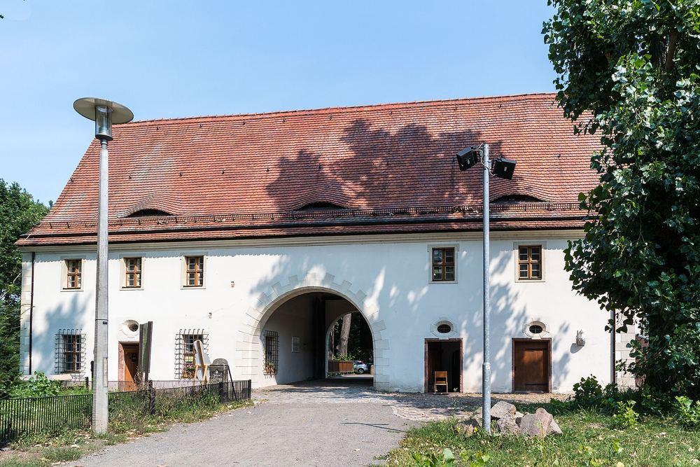
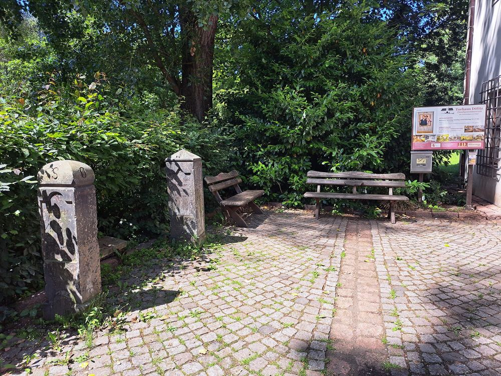

Besuch planen
Alles, was Sie vorher wissen müssen.
Öffnungszeiten, Eintritt, Führungen und der Weg hierher — auf einer Seite.
Öffnungszeiten
Mittwoch, Samstag, Sonntag.
- Ganzjährig
- Mittwoch, Samstag, Sonntag und feiertags, 10–17 Uhr Letzter Einlass 16.30 Uhr.
- Zusätzlich 2026
- Freitag, 15. Mai 2026, 10–17 Uhr
- 22.–25. Mai 2026
- Zugang nur mit einer Eintrittskarte zum Heidnischen Dorf Im Rahmen des Wave-Gotik-Treffens.
- Jahreswechsel
- Geschlossen vom 24. Dezember 2026 bis 1. Januar 2027 Gruppenanfragen sind auch in dieser Zeit möglich. Erster regulärer Öffnungstag 2027: Freitag, 2. Januar.
Kurz und wichtig
- Zahlung
- Nur BarzahlungIm Museum ist keine Kartenzahlung möglich.
- Garderobe
- Spinde für Jacken und Taschen stehen bereit.
- Anschrift
- Helenenstraße 24
04279 Leipzig - Telefon
- 0341 3389107
- info@torhaus-doelitz.eu
Eintritt
Was es kostet.
- ErwachseneGruppen ab 10 Personen: 4,00 € 5,00 €
- ErmäßigtGruppen ab 10 Personen: 2,50 € 3,00 €
- FamilienkarteZwei Erwachsene und bis zu zwei Kinder 14,00 €
- Kinder unter 7 Jahren frei
- FührungPauschal, unabhängig von der Gruppengröße 35,00 €
Ermäßigt gilt für Kinder ab 7 Jahren, Schülerinnen und Schüler, Auszubildende, Studierende, Menschen mit Behinderung und Leipzig-Pass-Inhaber. Ist im Behindertenausweis ein „B“ vermerkt, hat die Begleitperson freien Eintritt.
Rabatte
- Leipzig Regio Card
- 0,50 € Rabatt auf den regulären Eintrittspreis
- Konsum-KUSS-Gutschein
- 10 % auf den regulären Eintrittspreis Zusätzlich 5 € Rabatt auf die Führungspauschale.
Nur für Gruppen, auf Vorbestellung
- Kaffee und Kuchen
- Ein Stück Kuchen und „Kaffee satt“ für 6,00 € pro Person, zwei Stück für 8,00 € Serviert im Gewölbe, alternativ auch in der Ausstellung. Zur Wahl: Apfelkuchen mit Streusel, Streuselkuchen, gefüllter Bienenstich, Mohnkuchen — auch als gemischter Kuchenteller.
Führungen
Drei Wege durch das Haus.
Alle Führungen sind auf 60 Minuten angelegt und lassen sich nach Ihren Wünschen anpassen. Bitte wählen Sie bei der Bestellung ein Thema. Führungen sind auch außerhalb der Öffnungszeiten möglich.
Allgemeine Museumsführung
Alle Ausstellungsbereiche des Museums, schlaglichtartig beleuchtet.
Geschichte und Herstellung der Zinnfigur
Die Spezialführung zum Handwerk: von der Gravur über den Guss bis zur Bemalung.
Völkerschlacht und Napoleon
Die Erlebnisführung zur Völkerschlacht bei Leipzig und zum Zeitalter Napoleons — an dem Ort, an dem am 16. Oktober 1813 gekämpft wurde.
Anmeldung
Telefonisch unter 0341 3389107 oder per E-Mail.
Lage und Anreise
An der südlichen Stadtgrenze.
Das Torhaus Dölitz ist ein direkter Zugang zum rund 50 Hektar großen agra-Park zwischen Leipzig und Markkleeberg. Wer den Park in Richtung Markkleeberg verlässt, steht im Leipziger Neuseenland.
Bitte parken Sie nicht auf den Rasenflächen links und rechts des Weges vor dem Torhaus — dort wird ein Bußgeld von 35 € erhoben. Nutzen Sie den öffentlichen Straßenbereich.
- Straßenbahn
- Linie 11 bis Leinestraße Etwa 400 m Fußweg bis zum Torhaus.
- Bus
- Linie 79 bis Raschwitzer Straße, dann zwei Haltestellen mit der Linie 11 bis Leinestraße
- Mit dem Auto
- Von der A 38 über die B 2, Abfahrt Goethesteig
- Fahrplan
- Leipziger Verkehrsbetriebe
Barrierefreiheit vor Ort
Fragen Sie uns vorher — wir sagen Ihnen ehrlich, was geht.
Das Torhaus ist ein Barockbau von 1670 mit einer Ausstellung auf drei Etagen. Zu den baulichen Gegebenheiten im Einzelnen liegen uns keine geprüften Angaben vor, die wir hier veröffentlichen könnten. Rufen Sie bitte vor Ihrem Besuch an — dann klären wir gemeinsam, was für Sie möglich ist.

Vor dem Eingang stehen zwei Apelsteine — die Markierungssteine, die seit 1863 an die Stellungen der Völkerschlacht erinnern. Nummer 33 und 46 gehören zum Torhaus.